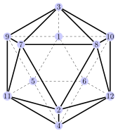
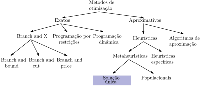
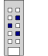
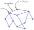
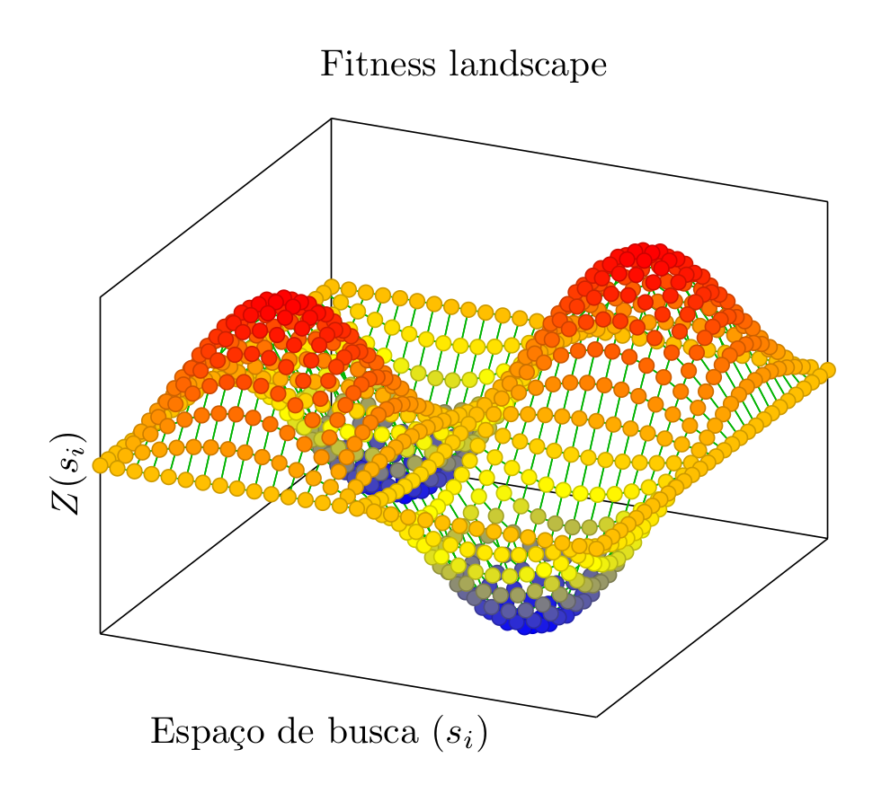
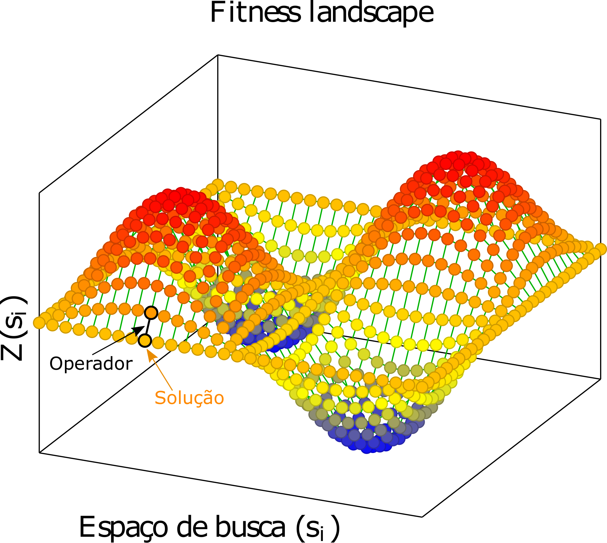
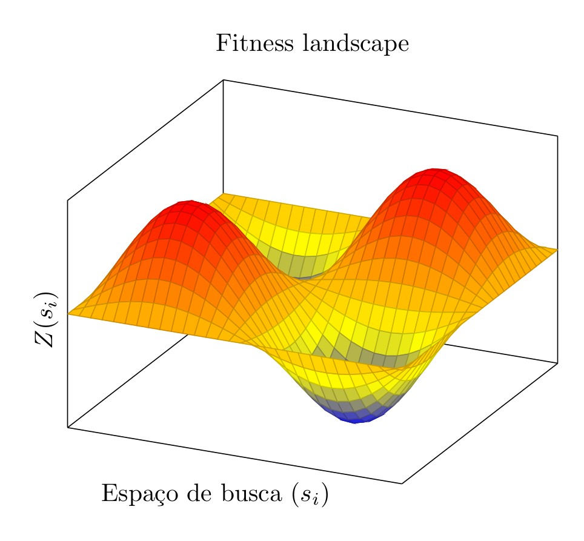
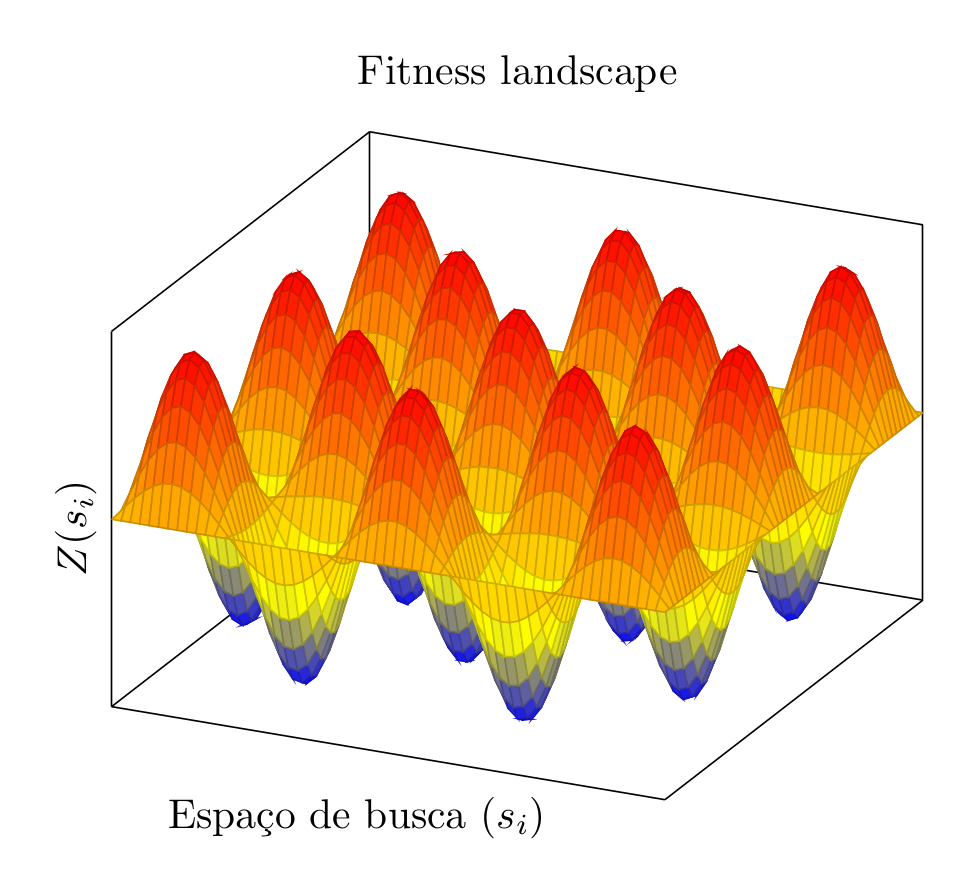
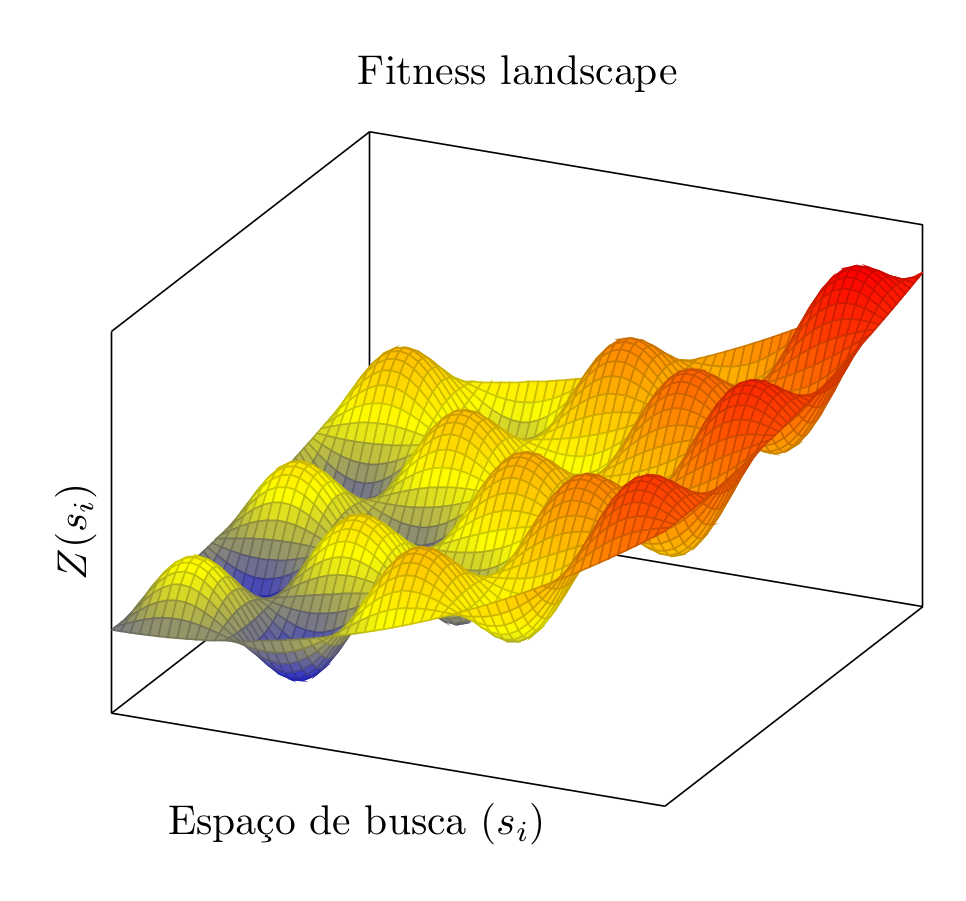
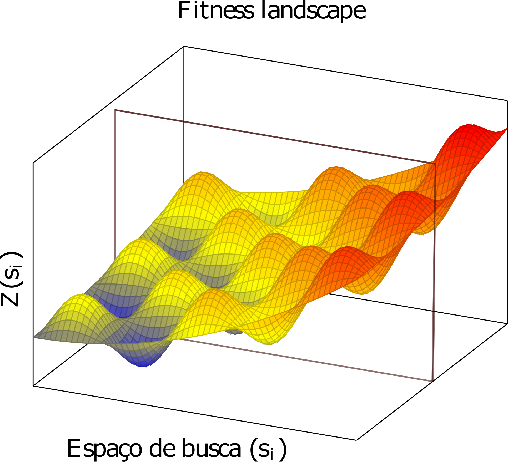

Introdução
Como vimos, as metaheuristicas precisam de uma (ou mais) solução inicial para começarem o processo de otimização. Aprendemos os conceitos dos algoritmos gulosos para geração de soluções iniciais, de forma que podemos começar a estudar uma grande família de metaheuristicas: algoritmos de solução única.
Como o nome sugere, essa família de metaheuristicas sempre trabalha com uma solução a cada iteração.
Introdução

Introdução
Alguns conceitos são comuns a todos os algoritmos de solução única. Iterativamente uma heurística gera novas soluções, e a partir delas faz a reposição da solução atual.
Introdução
Na etapa de geração, um conjunto de soluções é gerado a partir da solução atual \(s\). O conjunto \(C(s)\) é geralmente obtido a partir de transformações locais na solução \(s\).
Introdução
Na etapa de reposição, uma seleção é feita dentre os elementos do conjunto de candidatos \(C(s)\) para substituir a solução atual \(s\), ou seja, uma solução \(s'\in C(s)\) é selecionada para ser a nova solução. O processo é repetido até que um critério de parada seja atingido.
Introdução
A geração e reposição podem ser processos sem memória, ou seja, os dois procedimentos são baseados exclusivamente na solução atual. Do contrário, um histórico de buscas passadas é armazenado e utilizado nas fases de geração/reposição.
Introdução
O algoritmo abaixo ilustra um template de alto nível para todas as metaheurísticas de solução única.
Introdução
Dois conceitos são comuns a todas as metaheuristicas de solução única:
- A geração da solução inicial (já vimos uma família de algoritmos).
- A estrutura de vizinhança.
Vizinhança
A primeira pergunta que temos que responder é muito simples...
O que é um vizinho?
Vizinhança
Considerando a casa acima, quem são seus vizinhos?
Vizinhança
Em um primeiro momento podemos responder de pronto:
- Vizinho é aquele que está ao lado
De forma que a casa acima possui 2 vizinhos.
Vizinhança
E agora? Podemos usar a mesma definição de vizinho?
Vizinhança
Quais são os vizinhos do apartamento acima?
Vizinhança
Usando a nossa primeira definição:
- Vizinho é aquele que está ao lado
O apartamento acima possui somente um vizinho.
Vizinhança
Porém, podemos alterar a nossa definição de vizinho:
- Vizinho é aquele que está acima ou abaixo
O que se desdobra em 2 outros vizinhos.
Vizinhança
Qual poderia ser a definição de vizinho, para que os apartamentos destacados sejam considerados como vizinhos?
Vizinhança
- Vizinho é aquele que está a “1 apartamento de distância” em qualquer direção.
Essa definição engloba os 3 apartamentos acima destacados.
Vizinhança
- Vizinho ou vizinhança são conceitos que suportam mais de uma definição.
- Para cada definição de vizinhança, conjuntos diferentes de elementos podem ser considerados como vizinhos.
Vizinhança
Com esse novo conhecimento, vamos determinar um novo jogo, chamado:
O JOGO DA CARTA E DO VIZINHO
Vizinhança
Neste jogo houve um evento cataclismático na terra, e não existe mais internet. Você mora na casa indicada acima.
Vizinhança
A única forma de comunicação é por cartas que são entregues de vizinho para vizinho, até chegar no destino.
Vizinhança
Considerando você e onde a carta deve chegar, o jogo consiste em determinar a definição de vizinhança adequada para que a carta chegue ao destino. Para o exemplo acima, qual poderia ser uma definição que ganhe o jogo?
Vizinhança
A primeira que encontramos:
- Vizinho é aquele que está ao lado
Vizinhança
Com essa definição a sua carta chega ao destino final.
Vizinhança
Considerando a mesma vizinhança definida anteriormente, você consegue levar a carta ao destino nesse caso?
Vizinhança
Não é possível! Como podemos definir uma estrutura de vizinhança neste caso para vencermos o jogo?
Vizinhança
- Vizinho é aquele que está a “2 casas de distância” em todos os lados.
Vizinhança
Com essa definição conseguimos alcançar o nosso objetivo.
Vizinhança
Agora chegamos no nível Dark Souls do jogo da vizinhança.
Vizinhança
Considere a sua localização e o local onde a carta deve ser entregue.
Vizinhança
Qual a vizinhança que ganha o jogo?
Vizinhança
Ora, mas essa é muito fácil, me dê uma mais difícil!
- Vizinho é aquele que está a “no máximo 6.378 km (raio da terra) de distância” em todos os lados.
Vizinhança
Intuitivamente não podemos aceitar essa vizinhança... a vizinhança deve ser algo local/próximo do ponto considerado.
Vizinhança
- Vizinho ou vizinhança são conceitos que suportam mais de uma definição.
- Para cada definição de vizinhança, conjuntos diferentes de elementos podem ser considerados como vizinhos.
- A distância é uma parte importante na definição de uma vizinhança.
- De comum acordo (sem uma formalização), intuímos que uma vizinhança deve ser algo próximo.
Vizinhança
Mas por quê estamos discutindo conceitos abstratos de vizinhança?
Analisemos novamente a ideia geral de uma metaheurística de solução única. Qual a relação de vizinhos com o esquema?
Vizinhança
Na etapa de geração, um conjunto de soluções é gerado a partir da solução atual \(s\). O conjunto \(C(s)\) é geralmente obtido a partir de transformações locais na solução \(s\).
Vizinhança
Na etapa de geração, um conjunto de soluções é gerado a partir da solução atual \(s\). O conjunto \(C(s)\) é geralmente obtido a partir de transformações locais na solução \(s\).
Vizinhança
Essas transformações locais em \(s\) podem ser pensadas como soluções próximas a \(s\), ou ainda,
soluções vizinhas de \(s\)
Vizinhança
Ou seja, o conceito de vizinhança também é usado para soluções de problemas de otimização. Vejamos as definições formais.
Vizinhança
Vizinhança (Neighborhood): Uma função vizinhança N é um mapeamento \(N:S \rightarrow 2^S\) que atribui a cada solução \(s\in S\) um conjunto de soluções \(N(s) \subset S\)
Você consegue estabelecer uma relação entre essa definição e o exemplo inicial dos vizinhos em um prédio?

Vizinhança
A definição de vizinhança depende do tipo de problema de otimização. Primeiramente ela foi definida para os problemas contínuos.
Vizinhança em problemas contínuos: A vizinhança \(N(s)\) em um espaço contínuo é a bola com centro \(s\) e raio igual a \(\epsilon > 0\).
Note que existe uma dimensão de distância inerente ao problema: o raio é definido em função de uma determinada distância (dentre muitas possíveis).
Vizinhança
Se definirmos a distância pela Norma euclidiana, temos que a distância entre duas soluções \(s\) e \(s'\) é dada por:
Seja \(s = [2,3]\) e \(s'=[3,4]\), qual a distância entre as soluções?
Vizinhança
Em duas dimensões, com a norma euclidiana, podemos representar a vizinhança de uma solução \(s\) simplesmente fixando uma distância \(\epsilon\), e verificando todas as soluções que não ultrapassam essa distância.
Vizinhança
O que gera de fato um raio de vizinhos de \(s\) (todas as soluções dentro do círculo na imagem acima).
Vizinhança
Também podemos definir vizinhança para problemas de otimização discretos (os que vamos tratar na disciplina), como:
Vizinhança em problemas discretos: Em um problema de otimização discreta, a vizinhança \(N(s)\) de uma solução \(s\) é representada pelo conjunto \(\{s':d(s',s)\leq \epsilon\}\), em que \(d\) é o tipo de distância relacionada com o operador de movimento.
A definição de vizinhança em problemas discretos depende fortemente das estruturas usadas para a representação das soluções. Uma definição de distância pode servir para alguns problemas e não servir para outros.
Vizinhança
Também podemos definir vizinhança para problemas de otimização discretos (os que vamos tratar na disciplina), como:
Vizinhança em problemas discretos: Em um problema de otimização discreta, a vizinhança \(N(s)\) de uma solução \(s\) é representada pelo conjunto \(\{s':d(s',s)\leq \epsilon\}\), em que \(d\) é o tipo de distância relacionada com o operador de movimento.
O operador de movimento é definido como a operação que realizamos em uma solução \(s_1\) para transformá-la em uma nova solução \(s_2\).
Vizinhança
EXEMPLO: Considerando o problema da mochila com 4 itens e a representação binária de soluções. Podemos ter a solução \(s_1\) abaixo:
Uma distancia muito utilizada para problemas com representações binárias é a distância de Hamming. A distância de Hamming consiste na soma do número de posições em que duas soluções diferem entre si. Considerando a solução \(s_1\) e a solução \(s_2\) dada por:
Qual a distância entre as duas soluções?
Vizinhança
Verificamos quais elementos das duas soluções são diferentes:
Só existe 1 bit de diferença entre as duas soluções, de forma que \(d(s_1,s_2) = 1\). Lembre-se que a vizinhança de uma solução \(s\) são todas as soluções que estão a uma distância \(\leq \epsilon\). Se considerarmos a distância de Hamming e \(\epsilon = 1\), qual poderia ser um operador de movimento que ao ser aplicado em uma solução \(s\) gera uma solução vizinha \(s'\)?
Vizinhança
Um operador de movimento clássico para problemas com codificação binária é o flip. O operador flip inverte o elemento de uma solução: por exemplo, se ele era 0 vira 1, se era 1 vira 0.
Vizinhança
EXERCÍCIO: Considerando a distância Hamming com \(\epsilon = 1\), o operador flip e a solução inicial binária \(s\) mostrada acima, quais são seus vizinhos?
Vizinhança
Geramos 3 vizinhos da solução inicial. Agora quais são os vizinhos da solução \((0,0,1)\)?
Vizinhança
E assim podemos gerar todas as soluções da vizinhança a partir do operador flip, da distancia Hamming e \(\epsilon = 1\).
Vizinhança
E assim podemos gerar todas as soluções da vizinhança a partir do operador flip, da distancia Hamming e \(\epsilon = 1\).
Vizinhança
Achou que toda aquela história do jogo do vizinho e da carta era a toa?
Vizinhança
Com a nossa definição de vizinhança (distancia, operador e \(\epsilon\)), é possível entregar a carta?
Vizinhança
Com a nossa definição de vizinhança (distancia, operador e \(\epsilon\)), é possível entregar a carta? SIM!
Vizinhança
Usamos o operador flip nesta vizinhança. Quantos movimentos foram necessários para sairmos de \((0,0,0)\) e chegarmos a \((1,1,1)\)? É possível determinar uma vizinhança em que esse caminho seja feito com 2 movimentos?
Vizinhança
Se alterarmos \(\epsilon = 2\) geramos novos vizinhos, o que encurta o caminho até a solução.
Vizinhança
EXEMPLO: Considere o problema do caixeiro viajante com 3 cidades. Pense em uma vizinhança para o problema (distância, \(\epsilon\), operador de movimento).
Uma representação para a solução do TSP com \(n\) cidade é uma permutação de \(n\) elementos:
E pode ser modelada como um vetor de inteiros, um para cada ponto. Um operador comum em problemas permutacionais é o swap.
Dada uma permutação \(\pi\), um movimento swap(i,j) consiste em trocar os elementos \(\pi_i\) e \(\pi_j\) de posição.
Vizinhança
Considerando o operador swap, \(\epsilon = 2\) e a distância Hamming, construa a vizinhança para o TSP com 3 cidades (construa toda a vizinhança, vizinhos, vizinhos de vizinhos, etc...).
Vizinhança
Considerando o operador swap, \(\epsilon = 2\) e a distância Hamming, construa a vizinhança para o TSP com 3 cidades (construa toda a vizinhança, vizinhos, vizinhos de vizinhos, etc...).
Vizinhança
Considerando o operador swap, \(\epsilon = 2\) e a distância Hamming, construa a vizinhança para o TSP com 3 cidades (construa toda a vizinhança, vizinhos, vizinhos de vizinhos, etc...).
Vizinhança
Considerando o operador swap, \(\epsilon = 2\) e a distância Hamming, construa a vizinhança para o TSP com 3 cidades (construa toda a vizinhança, vizinhos, vizinhos de vizinhos, etc...).
Vizinhança
Considerando o operador swap, \(\epsilon = 2\) e a distância Hamming, construa a vizinhança da solução acima (somente da solução).
Vizinhança
Determine pelo menos 2 caminhos usando a vizinhança, partindo de \((1,2,3,4)\) até \((1,3,4,2)\). Quantos movimentos foram necessários?
Vizinhança
Desta forma 2 movimentos são necessários nos 2 caminhos. Encontre um caminho em que seja necessário pelo menos 3 movimentos.
Vizinhança
Neste caminho usamos 4 movimentos swap.
Vizinhança
- Ao determinar uma vizinhança, implicitamente estamos criando caminhos entre soluções vizinhas. Esses caminhos são percorridos ao executarmos o operador de movimento nas soluções. Isso implica que existem diversos caminhos possíveis entre duas soluções \(s\) e \(s'\).
Vizinhança
EXEMPLO: Considere o problema da mochila, o operador swap, a distância Hamming e \(\epsilon = 2\). Crie a vizinhança da solução acima.
Vizinhança
A vizinhança da solução fica da seguinte forma.
Vizinhança
Com essa definição de vizinhança, é possível, partindo de \(s = (0,1,1,0)\) chegar na solução \(s'=(1,1,1,0)\)?
Vizinhança
NÃO. Por quê isso ocorre?
Vizinhança
Inicialmente vamos criar a vizinhança da solução \((1,1,1,0)\).
Vizinhança
Inicialmente vamos criar a vizinhança da solução \((1,1,1,0)\).
Vizinhança
Se colocarmos os dois grafos de vizinhança lado a lado... Percebemos que não existem conexões entre os elementos dos mesmos, ou seja, não existe caminho entre as soluções \(s\) e \(s'\).
Vizinhança
- Ao determinar uma vizinhança, implicitamente estamos criando caminhos entre soluções vizinhas. Esses caminhos são percorridos ao executarmos o operador de movimento nas soluções. Isso implica que existem diversos caminhos possíveis entre duas soluções \(s\) e \(s'\).
- Dependendo da escolha de vizinhança, pode não ser possível encontrar um caminho que conecte todas as soluções.
Com esse conhecimento, finalmente conseguimos entender as três características que uma boa representação de solução deve possuir (visto na apresentação “Representação de soluções”).
Vizinhança
- Completude: todas as soluções de um problema (pelo menos as factíveis) devem ser passíveis de representação.
- Conectividade: é necessário que exista um caminho entre quaisquer duas soluções.
- Eficiência: a representação precisa ser de fácil manipulação pelos operadores de movimento. Também deve facilitar o cálculo da função objetivo e verificação de violação de restrições.
Vizinhança
Considere que determinamos uma vizinhança \(N_1\) para um determinado problema, gerando o grafo acima.
Vizinhança
Ao determinarmos uma nova vizinhança \(N_2\) geramos um novo grafo de soluções.
Vizinhança
Sendo que pode não haver conexões entre os grafos gerados por duas vizinhanças diferentes.
Vizinhança
Ainda, pode acontecer de uma mesma vizinhança ser desconectada, como vimos no exemplo do problema da mochila.
Vizinhança
Considere a vizinhança gerada para um determinado problema, em que os nós (soluções) em vermelho são infactíveis.
Vizinhança
Ainda, partindo da solução atual mostrada, quantos movimentos seriam necessários para chegarmos a solução ótima?
Vizinhança
O número mínimo de movimentos para chegarmos ao ótimo é 4. Existe algo que poderíamos fazer para encurtar essa distância?
Vizinhança
Se visitássemos uma solução infactível, conseguimos chegar ao ótimo em apenas 2 movimentos!
Vizinhança
Ainda, em alguns casos podemos resolver o problema da conectividade entre grafos de soluções justamente aceitando soluções infactíveis.
Vizinhança
No grafo desconectado por soluções factíveis acima, conseguiríamos chegar na solução ótima usando um nó infactível intermediário.
Vizinhança
- Ao determinar uma vizinhança, implicitamente estamos criando caminhos entre soluções vizinhas. Esses caminhos são percorridos ao executarmos o operador de movimento nas soluções. Isso implica que existem diversos caminhos possíveis entre duas soluções \(s\) e \(s'\).
- Dependendo da escolha de vizinhança, pode não ser possível encontrar um caminho que conecte todas as soluções.
- Em alguns casos pode fazer sentido aceitar soluções infactíveis para chegarmos em soluções melhores.
Ótimo local
Ótimo local: Relativamente a uma função de vizinhança \(N\), uma solução \(s\in S\) é um ótimo local se ela tem uma qualidade de solução melhor do que todos os seus vizinhos, ou seja, para um problema de minimização:
Ótimo local
Fica mais fácil entender o conceito de ótimo local gráficamente. Lembra-se da representação que fizemos das soluções do problema do TSP vs os seus custos?
Ótimo local
OBS: Já sabemos que a disposição das soluções no eixo \(S_i\) é muito mais complexa do que isso, bem como a função objetivo.
Ótimo local
Podemos representar a vizinhança de uma solução (que está no eixo \(s_i\)) diretamente na função objetivo.
Ótimo local
Considerando a vizinhança da solução mostrada na imagem, podemos dizer que ela é um ótimo local? Ou seja, \(f(s) \leq f(s') ,\forall s' \in N(s)\) ?
Ótimo local
Não, existe uma solução melhor (na verdade existem várias, todas abaixo da solução no centro da bola).
Ótimo local
Já a solução mostrada pode ser considerada um ótimo local: nenhuma solução na vizinhança tem valor melhor do que ela. Existem mais ótimos locais no exemplo acima?
Ótimo local
Existem 4 ótimos locais no exemplo.
Ótimo local
Ainda, percebe-se que o ótimo global é um ótimo local.
Ótimo local
O objetivo dos problemas de otimização é encontrar o ótimo global.
Fitness landscape
Finalmente, podemos definir o conceito de espaço de busca e fitness landscape.
Espaço de busca: O espaço de busca é definido como um grafo \(G = (S,E)\), onde o conjunto de vértices \(S\) corresponde ao conjunto de soluções que é definida pela representação computacional, e o conjunto de arcos \(E\) corresponde ao operador de movimento usado para gerar novas soluções (vizinhança).
Fitness landscape

A definição nada mais é do que o que estamos estudando até agora.
Fitness landscape
Fitness landscape: O fitness landscape (paisagem de adaptabilidade) pode ser definida por uma tupla \((G,f)\), em que o grafo \(G\) representa o espaço de busca e \(f\) representa a função objetivo que guia a busca por soluções.
Uma forma conveniente de descrever o fitness landscape é usando termos geográficos. Assim, considerando o espaço de busca como o piso, elevamos cada solução a uma altitude equivalente a sua qualidade (função objetivo). Obtemos então uma paisagem feita de vales, colinas, penhascos, planaltos, etc...
Fitness landscape
Com o grafo G do espaço de busca.
Fitness landscape
“Achatado” no piso.
Fitness landscape
Calculamos o custo de cada solução.
Fitness landscape
Elevando-a a uma “altitude”.
Fitness landscape

Fitness landscape
Uma metaheurística de solução única pode ser vista como uma trajetória (ou uma caminhada) na paisagem para encontrar o vale mais baixo (em um problema de minimização). Duas soluções sucessivas são sempre vizinhas, e podem ser acessadas por meio do operador de movimento.
Fitness landscape

Fitness landscape
Visualmente, uma representação do fitness landscape sem os nós (círculos representando as soluções) fica mais “agradável”.
Fitness landscape

Fica mais fácil enxergar o landscape planificado.
Fitness landscape
ATENÇÃO: Lembre dos grafos do espaço de busca, nada garante que todas as soluções são conectadas! Isso é uma simplificação que fazemos para ajudar na visualização do landscape.
Fitness landscape
 
Cada problema de otimização gera um fitness landscape diferente. As metaheurísticas tentam explorar o landscape de forma eficiente.
Fitness landscape

Vemos que a nossa simplificação do fitness landscape é um “corte” no modelo original.
Fitness landscape
Os diferentes padrões de landscape vão influenciar no design das metaheurísticas.
Fitness landscape
- O fitness landscape é a topologia de um problema de otimização.
- Essa topologia é o que usamos para realizar o design de metaheurísticas.
Atividade 1
- Explique as principais componentes de um algoritmo de solução única.
- Qual é a relação entre os algoritmos de solução única e o conceito de vizinhança?
- O que é vizinhança em um problema de otimização discreto? E operador de movimento?
- Considere as duas soluções abaixo:
\[s_1 = \left[ \begin{array}{cccccc} 1&0&1&0&1 \end{array} \right] s_2 = \left[ \begin{array}{cccccc} 0&0&1&1&1 \end{array} \right]\]
Calcule a distância entre as soluções considerando a distância Euclidiana e a Hamming.
- Como funcionam os operadores de movimento flip e swap?
- Considerando a solução inicial \(s_1 = [0,0,1,0,1]\) e o operador flip, gere os vizinhos de \(s_1\).
- Seja a solução inicial \(s_1 = [0,0,1,0,1]\) e a solução final \(s_2 = [1,0,1,1,1]\) com o operador flip. Mostre um caminho possível entre \(s_1\) e \(s_2\) gerado pela vizinhança do flip.
Atividade 1
- Considerando uma vizinhança \(N\), sempre vai existir um caminho entre duas soluções \(s\) e \(s'\)? Quais casos podem ocorrer?
- Você leu um artigo de um algoritmo que usa soluções infactíveis em algumas iterações. Qual é a lógica por trás disso? Quais problemas esse tipo de abordagem espera sanar?
- O que é um ótimo local? Você estuda um algoritmo que garante chegar em um ótimo local, o que pode ser dito sobre a solução global do problema?
- O que é espaço de busca? Como ele se relaciona com o fitness landscape?
- Busque 2 operadores de movimento (vizinhanças) para os seguintes problemas, e forneça um exemplo numérico da execução no movimento para cada um deles:
- TSP
- Mochila
- VRP
Atividade 2
- Considerando o problema escolhido para ser desenvolvido na disciplina, pense em um operador de movimento e uma vizinhança para o mesmo. Em seguida busque na literatura (livros, artigos) se já existe algum operador definido para o problema (para algumas classes de problemas é muito difícil definir uma vizinhança, pela complexidade na própria representação computacional das soluções).